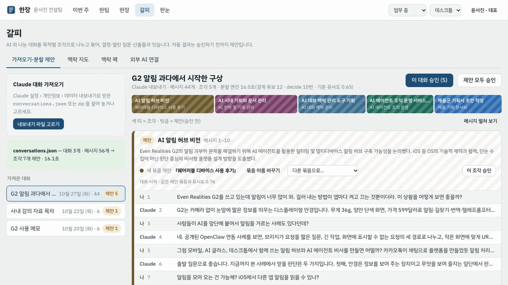
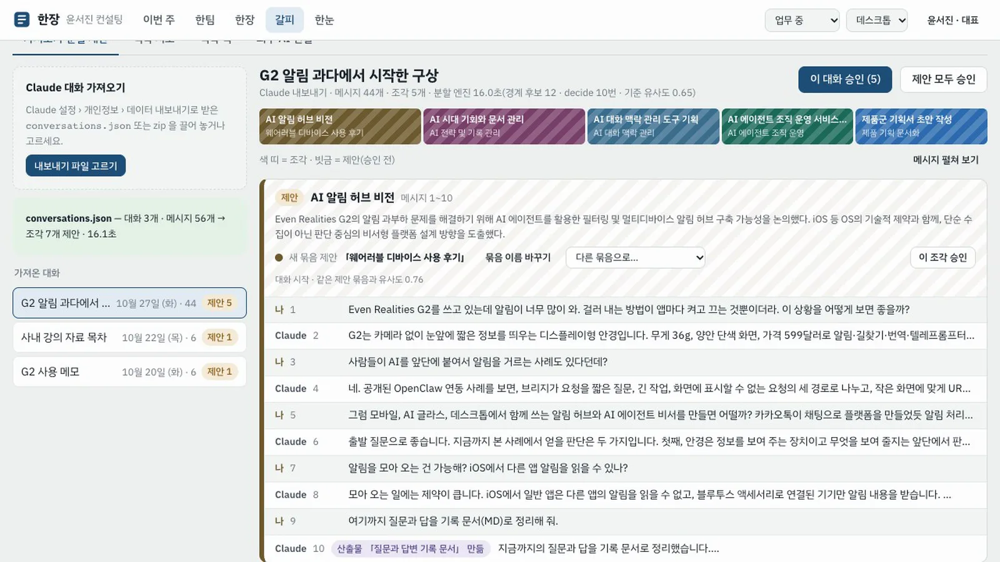
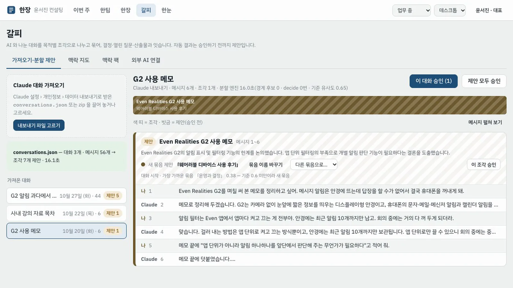
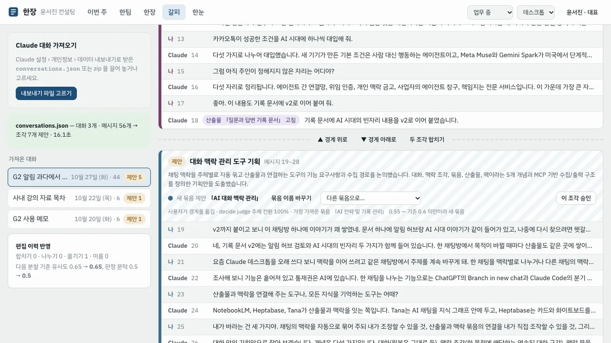
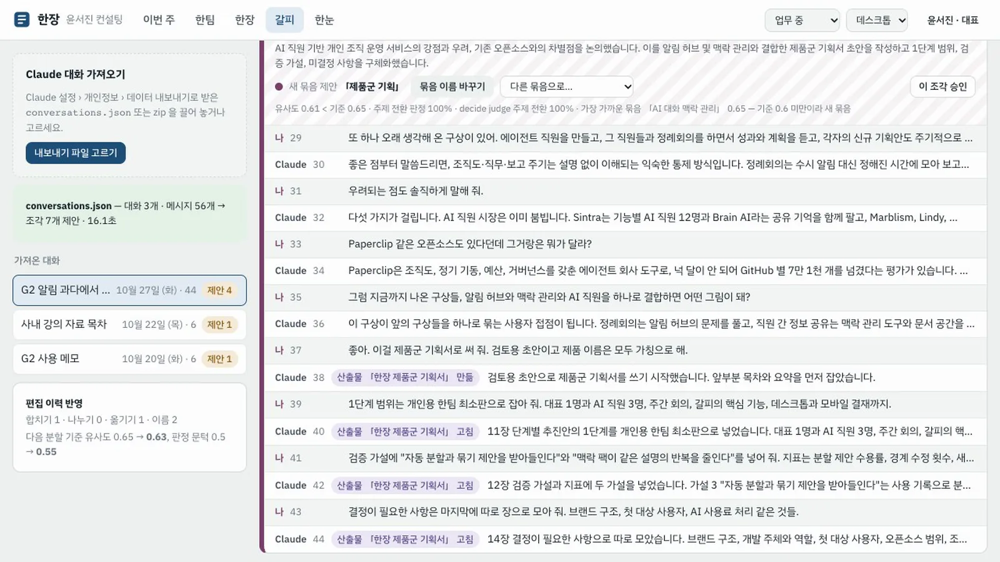
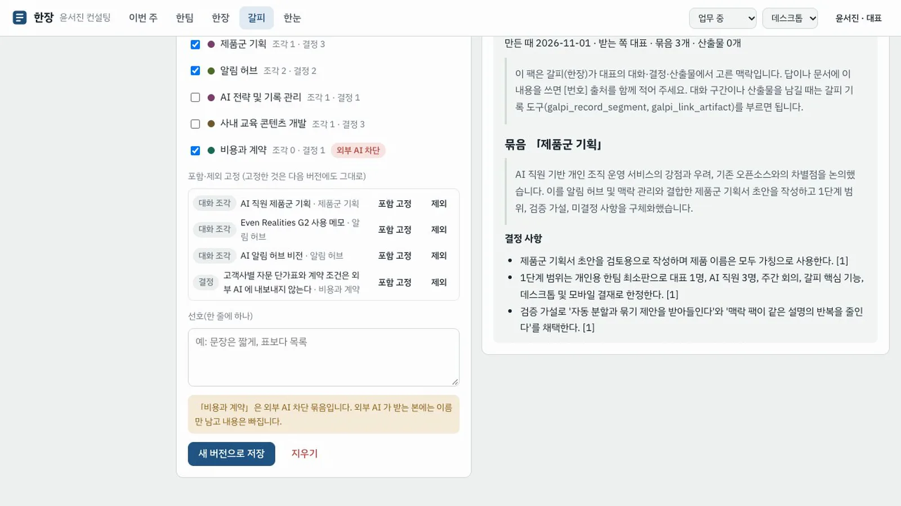
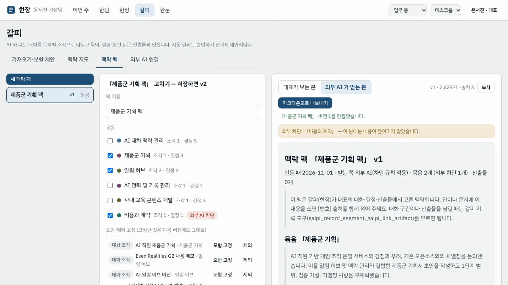
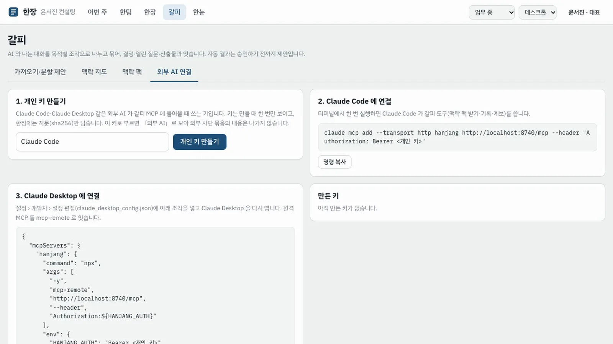
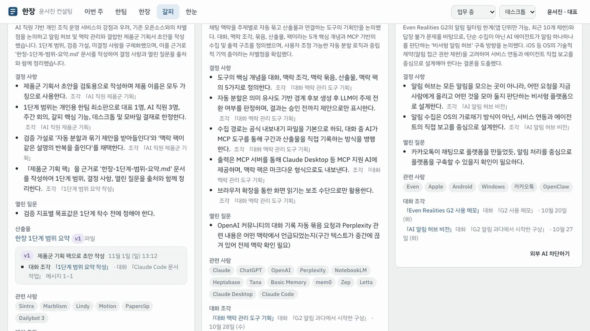

Claude 대화 내보내기를 가져와 목적별 조각과 묶음으로 정리하고, 필요한 맥락만 골라 맥락 팩으로 만든 뒤, Claude Code 가 MCP 로 그 팩을 읽어 문서를 쓰고 계보를 남기게 합니다.
무엇을 · 왜#
AI 도구를 오래 쓰면 한 채팅방에 여러 목적이 섞이고, 한 목적은 여러 채팅방에 흩어집니다. 어떤 과거 대화를 참고할지도 AI 의 검색이 정합니다. 갈피는 맥락을 나누고, 묶고, 고정하는 통제권을 사용자에게 돌려줍니다.
| 개념 | 뜻 |
|---|---|
| 대화 | 원래 채팅방. 원본은 그대로 둔다 |
| 맥락 조각 | 한 목적에 해당하는 연속된 대화 구간 |
| 맥락 묶음 | 채팅방과 관계없이 같은 목적의 조각을 모은 것. 결정 사항·열린 질문·용어를 가진다 |
| 산출물 계보 | 산출물의 각 버전이 어느 조각과 결정에서 나왔는지 |
| 맥락 팩 | 묶음·산출물·선호를 골라 새 대화나 AI 직원, 외부 AI 에 넘기는 꾸러미 |
자동 분할은 이렇게 판단합니다. 발언 사이의 유사도(Process GPT judge 의 bge-m3 임베딩)가 크게 떨어지는 곳을 경계 후보로 잡습니다. 후보마다 주제 전환인지, 같은 주제의 하위 논의인지를 Process GPT context-router 의 /decide 로 판정합니다. 사용자가 "이번엔 다른 얘기"라고 밝힌 곳과 새 산출물을 만든 곳은 강한 경계입니다. 대표가 경계를 고친 이력은 다음 분할에 반영됩니다. 결과는 승인 전까지 제안입니다.
따라 하기#
준비물: Claude 의 설정 › 개인정보 › 데이터 내보내기로 받은 파일(zip 이나 그 안의 conversations.json)입니다. 이 장에서는 저장소의 fixtures/claude-export/conversations.json 을 씁니다. 이 기획서를 만든 대화를 재구성한 것으로, 목적이 다섯 번 바뀌는 대화 하나와 다른 날의 짧은 대화 둘이 들어 있습니다.
- 가져오기. 위 막대의 갈피 › 가져오기·분할 제안에서 내보내기 파일 고르기를 누르고 파일을 고릅니다. 「나누는 중…」이 10~15초 이어진 뒤 "대화 3개 · 메시지 56개 → 조각 N개 제안"이 나옵니다.

- 판정 이유 보기. 오른쪽 대화가 조각별 색 띠로 나뉘고, 조각마다 빗금 친 제안 표시와 판정 이유가 붙습니다. 판정 이유에는 대화 시작, 사용자가 전환을 밝힘, 유사도와 주제 전환 판정 확률, 산출물 생성이 있습니다.

- 다른 날의 대화. 왼쪽 G2 사용 메모를 누르면 그 조각이 첫 대화의 첫 조각과 같은 새 묶음 제안에 들어가 있습니다. 채팅방이 달라도 같은 목적이면 모입니다.

- 경계 고치기. 「맥락 관리」 조각 위 경계에서 ▲ 경계 위로를 눌러 한 차례 옮기고, 마지막 경계에서 두 조각 합치기를 누릅니다. 조각 요약은 1~2초 뒤 다시 계산되고, 편집 이력 반영 카드에 옮기기·합치기 횟수와 바뀐 분할 기준이 보입니다.

- 묶음 이름 바꾸기와 승인. 첫 조각의 묶음 이름 바꾸기로
알림 허브, 합친 조각은제품군 기획으로 바꿉니다. 제안 모두 승인을 누르면(7~12초) 묶음이 확정되고, 묶음마다 결정 사항·열린 질문·용어가 그 조각을 출처로 추출됩니다.
- 맥락 지도. 맥락 지도에서 보기 →를 누릅니다. 「제품군 기획」 묶음에 결정 사항, 열린 질문, 관련 사람이 보입니다. 「알림 허브」는 조각 2개(다른 날 메모 포함)입니다. 「비용과 계약」에는 외부 AI 차단 표시가 붙어 있습니다. 시간순 보기로 바꿀 수도 있습니다.

- 맥락 팩 만들기. 맥락 팩 › 새 맥락 팩에서 이름을
제품군 기획 팩으로 하고 「제품군 기획」, 「알림 허브」, 「비용과 계약」을 고른 뒤 팩 만들기를 누릅니다. 출처 번호가 붙은 마크다운이 버전 1로 저장됩니다.
- 외부 AI 가 받는 본. 외부 AI 가 받는 본을 누르면 「외부 차단: 「비용과 계약」」만 있고 그 묶음의 문장은 빠져 있습니다. 마크다운으로 내보내기로 파일을 받을 수도 있습니다.

- 외부 AI 연결. 외부 AI 연결에서 개인 키 만들기를 누르면 키가 한 번만 보이고, Claude Code 용
claude mcp add --transport http hanjang …/mcp --header "Authorization: Bearer <키>"명령과 Claude Desktop 설정 조각이 함께 나옵니다. 키는 화면 밖에 보관하세요.
- Claude Code 로 문서 쓰기. 터미널에서 Claude Code 에게 「제품군 기획 팩」을 불러 1단계 범위 요약 문서를 쓰게 합니다. Claude 는
galpi_get_pack으로 팩을 읽습니다. 문서를 쓴 뒤galpi_record_segment로 "이 구간은 제품군 기획 묶음",galpi_link_artifact로 "이 파일은 그 산출물"을 남깁니다. 저장소의scripts/galpi-claude-demo.sh가 이 과정을 그대로 돌립니다(키는 끝나면 지움). - 계보 확인. 맥락 지도의 「제품군 기획」 묶음에 산출물 「한장 1단계 범위 요약 v1」이 생겼습니다. 누르면 버전 1이 어느 조각(「1단계 범위 요약 작성」)에서 나왔는지 계보가 열립니다. 한장 페이지 아래에도 같은 계보 블록이 붙습니다.

AI 직원도 같은 도구를 씁니다
hanjang-mcp 를 mcp-hub 에 등록하면(scripts/register-mcp.mjs) Process GPT 테넌트 MCP 설정에 반영됩니다. 그러면 한장의 AI 직원(deepagents)도 같은 갈피 도구로 묶음을 읽습니다. 직원은 직무 기술서의 읽기 범위 밖 묶음을 받지 못합니다.
PoC 의 한계
1단계는 Claude 내보내기만 받습니다(ChatGPT 는 2단계). 묶음 이름은 모델이 붙이므로 실행마다 조금 다를 수 있습니다. 승인한 조각은 더 옮기거나 합칠 수 없습니다.
확인 문제#
- 자동 분할 결과는 언제 확정되나요?
- 「비용과 계약」 묶음을 고른 팩을 Claude Code 가 읽으면 무엇이 보이나요?
- 경계를 합친 이력은 어디에 쓰이나요?
정답
- 대표가 승인할 때입니다. 그 전까지는 모두 제안입니다.
- 묶음 이름과 「외부 차단」 표시만 보이고, 그 안의 기록과 결정은 나가지 않습니다.
- 다음 분할의 기준에 쓰입니다. 합치기가 많으면 경계를 덜 나눕니다.